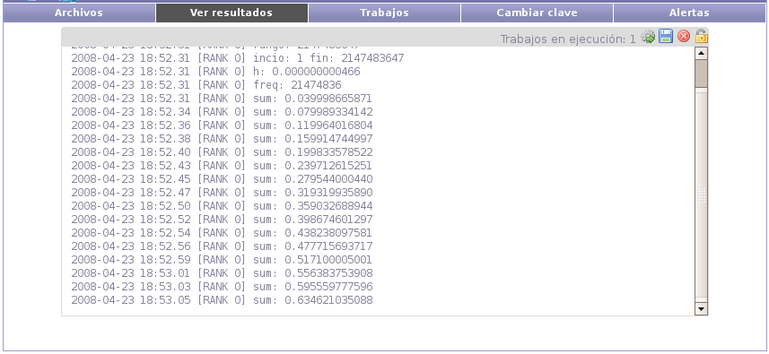

Luego de ejecutar un archivo se mostrará la salida del mismo. En la
barra lateral se mostrará:
- La cantidad de trabajos en ejecución asociados al cliente del usuario
actual.
- El estado del trabajo actual (en ejecución, en espera, terminado).
- La opción de descargar la salida del mismo. Si está terminado será
la salida total, en caso contrario se descargará la salida hasta el
momento.
- La opción de terminar la ejecución.
- La opción de bloquear o desbloquear el scroll.

Santiago Iturriaga
2008-05-26